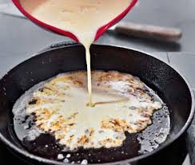

Recept!
Amerikanska:
12 st
3 dl vetemjöl
2 tsk bakpulver
1/2 tsk salt
1 msk strösocker
2 ägg
2 1/2 dl mjölk
Blanda dem torra ingredienserna först.
Stek pannkakorna i smör.
när sidan som är neråt är gyllen så måste du vända på den!
Klar!
Vanliga:
6 port
3 3/4 dl vetemjöl
3/4 tsk salt
9 dl mjölk
4 1/2 ägg
Stek med smör.
När dem är gyllenbruna på båda sidor är dem klara!
klar!
